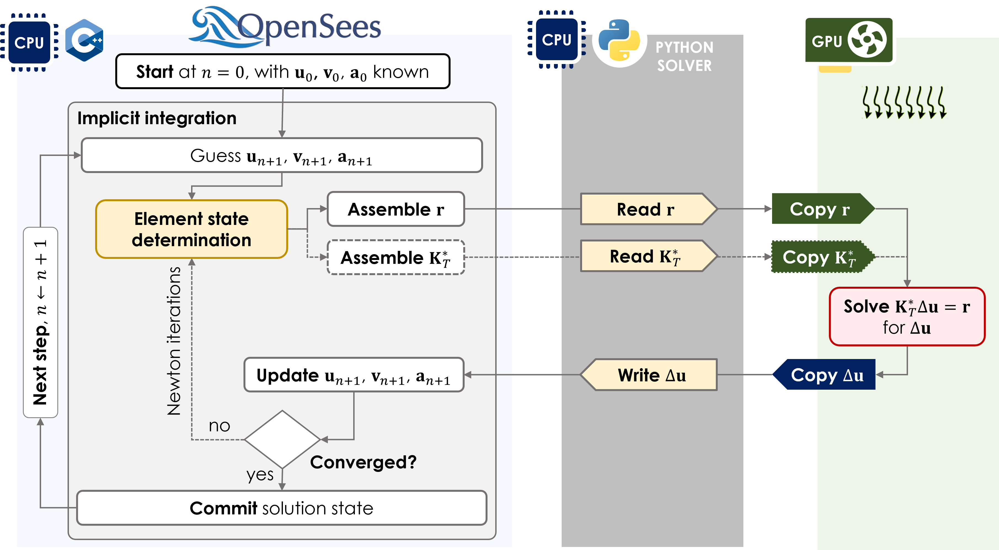

Introducing openseespy-solvers
I released openseespy-solvers, a Python package that provides SciPy-style sparse linear and eigen solvers for OpenSeesPy’s PythonSparse system command.
The goal is simple: make it easier to experiment with solver backends while keeping the OpenSeesPy modeling workflow familiar.
How it works

PythonSparse interface to external Python solver backends, including GPU-enabled sparse solves.OpenSeesPy still owns the finite-element model, the implicit integration loop, and the element state determination. During each analysis step, OpenSeesPy assembles the residual vector and tangent matrix, then passes those arrays through PythonSparse to a Python solver object.
That solver object can call a CPU backend such as SciPy, or copy the assembled arrays to a GPU backend such as CuPy or nvmath.sparse. Once the backend solves for the displacement increment, the solver writes the result back to OpenSeesPy so the analysis can update the trial state, check convergence, and continue.
Install
The base package includes NumPy/SciPy CPU solvers and requires Python 3.12 or newer:
python -m pip install openseespy-solversIf OpenSeesPy is not already installed in your environment, use the optional extra:
python -m pip install "openseespy-solvers[opensees]"Optional extras are available for UMFPACK and NVIDIA GPU backends:
python -m pip install "openseespy-solvers[umfpack]"
python -m pip install "openseespy-solvers[cuda12]"
python -m pip install "openseespy-solvers[cuda13]"See the installation guide for platform notes, especially for UMFPACK on Windows and CUDA environments.
Quick Example
import openseespy.opensees as ops
from openseespy_solvers.scipy import spsolve
solver = spsolve()
# after defining the OpenSeesPy model:
ops.system("PythonSparse", solver.to_openseespy())
ops.numberer("Plain")
ops.constraints("Plain")
ops.integrator("LoadControl", 1.0)
ops.algorithm("Newton")
ops.analysis("Static")
ops.analyze(1)For eigen analysis:
from openseespy_solvers.scipy import eigsh
eigensolver = eigsh(tol=1e-8)
eigenvalues = ops.eigen("PythonSparse", 5, eigensolver.to_openseespy())Solver Backends
The package currently wraps solver objects from:
scipy.sparse.linalgfor CPU sparse linear and eigen solvescupyx.scipy.sparse.linalgfor GPU sparse workflows through CuPynvmath.sparsefor GPU direct sparse solves
For more info, refer to the documentation and other links below.
Links
This is an early release, and I am especially interested in feedback from OpenSeesPy users working with larger sparse systems, eigen analyses, and GPU-enabled environments.